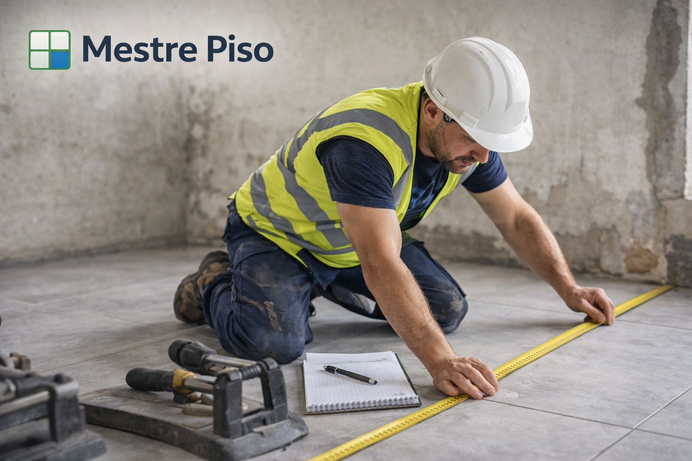
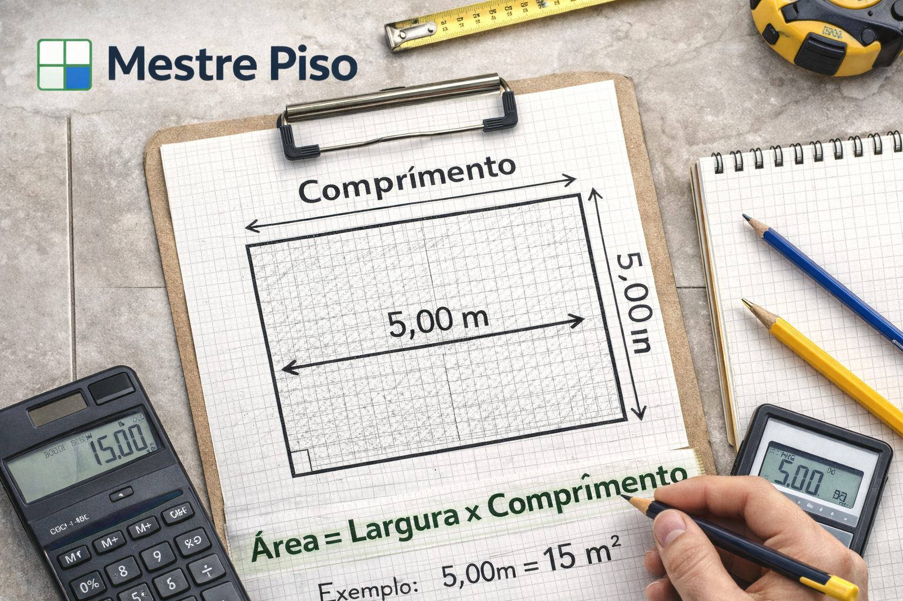

Passo a passo para calcular piso por metro quadrado
Antes de comprar qualquer caixa de piso, vale seguir uma sequência simples. Isso evita estimativas fracas e melhora a tomada de decisão na obra.
Descubra largura e comprimento com atenção para não errar a área total.
Veja o tamanho do piso escolhido para entender o rendimento real por peça.
Inclua margem para cortes, paginação, quebras e ajustes na execução.

O primeiro passo: medir corretamente o ambiente
Antes de pensar em quantidade de peças, você precisa medir com precisão a largura e o comprimento do local. A conta básica da área é simples:

Se um cômodo tem 3 metros de largura e 5 metros de comprimento, a área será de 15 m². Esse é o ponto de partida para calcular o piso, mas não deve ser o único dado considerado.
Para agilizar esse processo, você também pode usar nossa calculadora de piso online e descobrir com mais clareza quanto comprar para sua obra.
Como calcular quantas peças de piso serão necessárias
Depois de descobrir a área total, é preciso entender o tamanho da peça escolhida. Um piso de 60x60 cm, por exemplo, ocupa 0,36 m² por peça.
Para estimar a quantidade de peças, você divide a área do ambiente pela área da peça. Só que, na prática, a obra quase sempre envolve cortes, perdas e ajustes de paginação.
Por isso, calcular apenas no seco pode dar uma falsa sensação de segurança. O ideal é incluir uma margem de perda.
Como calcular caixas de piso
Muitas lojas vendem piso por caixa. Nesse caso, você precisa verificar o rendimento informado pelo fabricante, normalmente em metros quadrados por caixa.
Se cada caixa cobre 2,5 m² e o ambiente tem 15 m², a conta inicial seria:
Mas a compra final pode precisar de uma ou mais caixas extras dependendo do padrão de assentamento, dos recortes e da margem de segurança adotada.
Margem de perda: por que ela é importante?
Um dos erros mais comuns é comprar exatamente a metragem do ambiente. Isso aumenta o risco de faltar material quando houver recortes, quebras ou ajustes.
- Paginação reta costuma exigir uma perda menor
- Paginação diagonal normalmente aumenta a perda
- Ambientes com muitos recortes pedem mais atenção
- Obras com acabamento mais exigente precisam de melhor planejamento
É por isso que profissionais experientes evitam trabalhar apenas com a área bruta.
Erros comuns ao calcular piso por m²
- Medir o ambiente de forma errada
- Ignorar a largura do rejunte
- Comprar pela área sem pensar nos cortes
- Não verificar o rendimento por caixa
- Desconsiderar a paginação escolhida
- Não prever margem de segurança
Quando vale a pena usar uma calculadora profissional
Quando você quer mais precisão, mais velocidade e uma apresentação melhor para o cliente, usar uma calculadora profissional faz toda a diferença. Em vez de depender apenas de contas manuais, você ganha uma visão mais prática da compra e do planejamento.
Com o Mestre Piso, o profissional consegue estimar área, peças, caixas e ainda seguir para recursos mais avançados no app, como paginação e apresentação técnica.
Conclusão
Calcular piso por metro quadrado parece simples, mas para comprar bem e executar sem sustos é importante considerar área, tamanho da peça, rendimento por caixa e margem de perda.
Quanto melhor o cálculo, menor a chance de desperdício e maior a confiança na obra. Para quem busca mais precisão e praticidade, uma calculadora específica pode ajudar bastante.